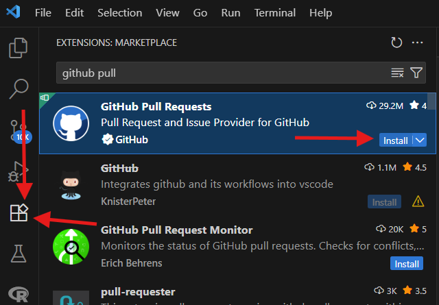

Erste Schritte
Hier werden euch die ersten Schritte erklärt: von der Beschaffung der benötigten Dateien über GitHub bis hin zu euren ersten Übungen mit dem Code.
Als Erstes öffnet ihr den Windows-Explorer und erstellt auf eurem Desktop einen neuen Ordner mit dem Namen projektMario_EUER_NAME. Danach startet ihr das Programm Visual Studio Code und klickt auf den Button „Ordner öffnen“ (oder „Open Folder“). Es öffnet sich ein Fenster, in dem ihr euren gerade erstellten Ordner auswählt und öffnet.
🎯 Nächstes Kapitel: Alles aufbauen!
Super, dass ihr so weit gekommen seid! 🛠️
Jetzt geht's darum, eure Programmierumgebung vollständig einzurichten und alle wichtigen Dateien herunterzuladen. Keine Sorge – Schritt für Schritt und alles ganz easy! 😊
Hinweis: Wenn ihr gerade im Computerraum seid, könnt ihr direkt bei Schritt 3 weitermachen. Die ersten beiden Schritte braucht ihr nur daheim.
📦 Vorbereitung zu Hause:
-
Git installieren:
Besucht gitforwindows.org und wählt dort unter „Assets“ die DateiGit-2.50.1-64-bit.exeaus.
Führt die Datei aus und klickt euch einfach mit allen Voreinstellungen durch – nichts verändern, einfach bestätigen. So bekommt ihr die optimale Git-Erfahrung. -
GitHub-Erweiterung in Visual Studio Code:
Öffnet Visual Studio Code, sucht im Erweiterungsbereich nach GitHub Pull Requests und installiert die Erweiterung.
💾 Repository klonen:
-
Öffnet ein Terminal in Visual Studio Code. Achtet darauf, dass ihr euch im gewünschten Projektordner befindet – dieser sollte unten im Terminalpfad sichtbar sein.
Gebt nun folgenden Befehl ein, um das Projekt von GitHub herunterzuladen:
git clone https://github.com/Misterz1x/Praktikantentage.git
Nun müsst ihr nur noch das richtige Verzeichnis auswählen, dazu schreibt einfach:
cd Praktikantentage⚙️ UV-Projekt vorbereiten:
Hinweis: Wenn ihr im Computerraum seid, sind die nächsten drei Schritte bereits erledigt – ihr könnt direkt bei Schritt 7 weitermachen.
-
PowerShell öffnen und UV installieren:
Gebt folgenden Befehl in eure PowerShell ein:
powershell -ExecutionPolicy ByPass -c "irm https://astral.sh/uv/install.ps1 | iex" -
Pfad setzen:
Ihr bekommt nach der Installation einen Pfad wie$env:Path = "C:\Users\..."angezeigt.
Kopiert diesen Befehl und führt ihn direkt in der PowerShell aus, um UV global nutzbar zu machen.
Wichtig: Wählt die Zeile für Powershell aus und kopiert nur bis ihr bei der Klammer seid, das (Powershell) könnt ihr weglassen -
UV-Version prüfen:
Gebt folgenden Befehl in der Powershell ein:
Wennuv --version0.8.3oder etwas Ähnliches angezeigt wird, ist alles korrekt eingerichtet!
🐍 Virtuelle Umgebung starten:
-
Virtuelle Umgebung erstellen:
Öffnet in Visual Studio Code ein Terminal und gebt folgenden Befehl ein:
(wenn ihr es zuvor bereits offen hattet, bitte schließt es und öffnet es erneut)
uv venv -
Aktivieren der Umgebung:
Jetzt sollte im Terminal vor dem Pfad etwas wie.venv\Scripts\activate(Praktikantentage)stehen – das zeigt an, dass ihr in der richtigen Umgebung arbeitet. -
Benötigte Bibliotheken installieren:
Damit installiert ihr alles, was das Projekt braucht. (Dies könnte circa 2 - 5 Minuten dauern)uv pip install -r pyproject.toml
Sollte dies nicht der Fall sein, schreibt einfach diesen Befehl in euer Terminal:
Set-ExecutionPolicy -Scope CurrentUser -ExecutionPolicy RemoteSigned🚀 Letzter Check: Spiel starten!
Um zu prüfen, ob alles funktioniert, könnt ihr jetzt unser Mario-Spiel starten:
python camario.py